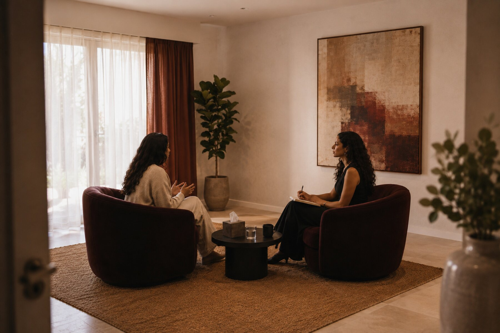
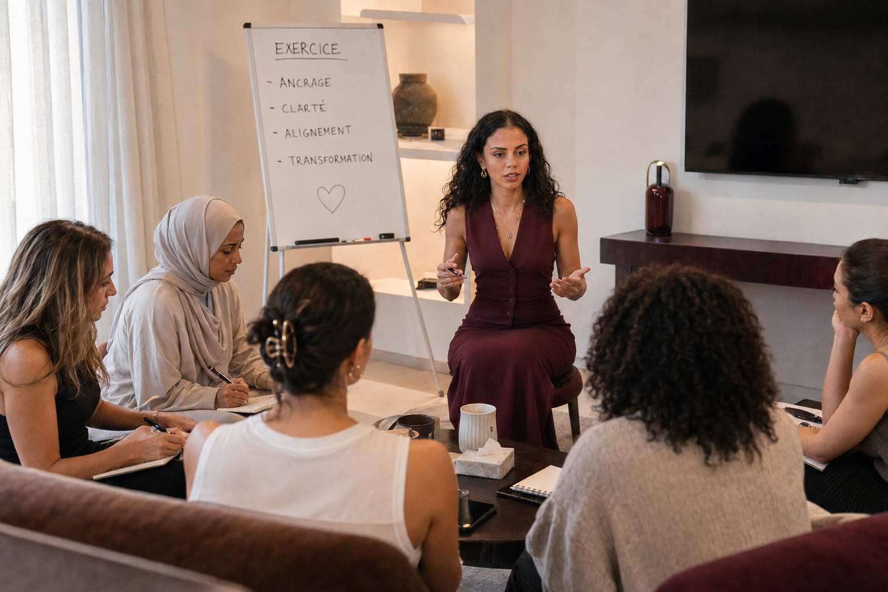
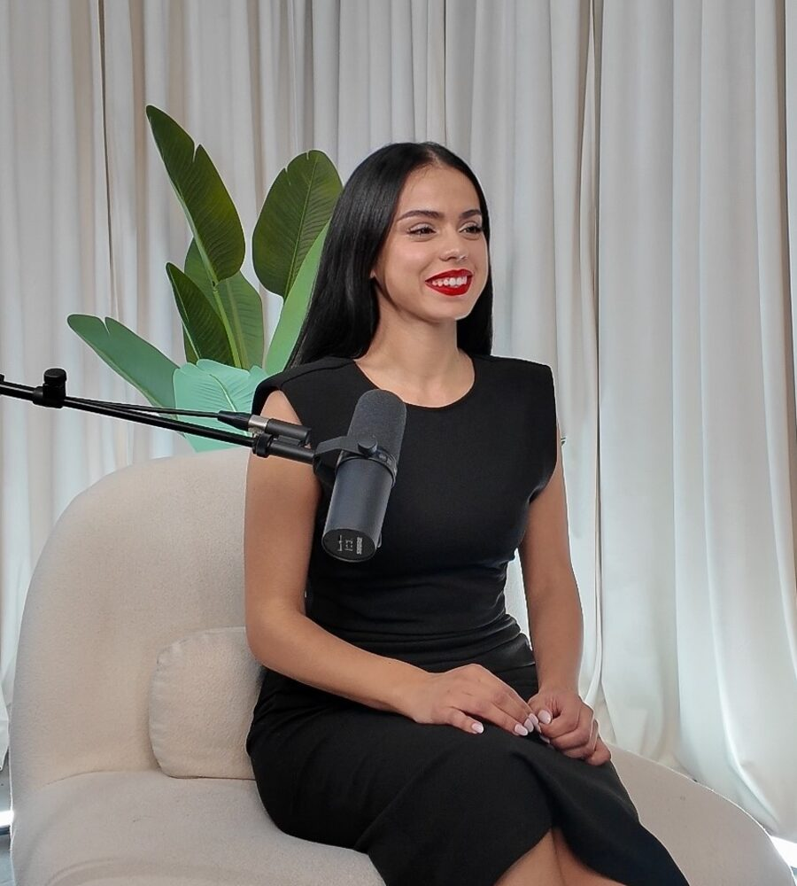

Prévention des RPS et stress au travail
Identifier les facteurs de surcharge mentale, prévenir l'épuisement professionnel et outiller les équipes pour construire un équilibre vie professionnelle et vie personnelle durable.

Aligner l’humain et la stratégie.
Accompagner la transformation professionnelle des entreprises à l'intersection de l'humain et de la stratégie : prévention des risques psychosociaux, développement des compétences relationnelles, inclusion et alignement des postures.
planifier un accompagnementPlacer l’humain au centre de sa performance.
Voies Hautes accompagne les structures et cabinets à optimiser leurs performances à travers la priorisation de l’humain : de la gestion des risques à l’identité collective, en passant par l’amélioration de la communication, du leadership ou des compétences.
Identifier les facteurs de surcharge mentale, prévenir l'épuisement professionnel et outiller les équipes pour construire un équilibre vie professionnelle et vie personnelle durable.
Installer une communication interpersonnelle constructive, réguler les situations sensibles, désamorcer les frictions et renforcer la qualité relationnelle (FR / EN).
Évaluer les risques humains et organisationnels sur le terrain pour structurer le DUERP et déployer les formations obligatoires.
Sensibiliser les collaborateurs, prévenir les biais et les incompréhensions culturelles ou générationnelles, et favoriser un environnement de travail respectueux et collaboratif.
Réduire l'écart entre la promesse employeur affichée et la réalité vécue sur le terrain, renforcer la cohérence interne et soutenir l'engagement des équipes.
Accompagner les dirigeants, managers et experts dans l'affirmation de leur posture, la clarté de leur prise de parole et le rayonnement de leur identité professionnelle.

mon accompagnement
Relier la rigueur du diagnostic terrain à une pédagogie active pour ancrer des transformations professionnelles durables.
Un cadre exigeant, lucide et opérationnel pour objectiver les points de friction, sécuriser vos obligations légales et outiller durablement les décideurs, les managers et les équipes.
Analyse du contexte, recueil des besoins sur le terrain et définition d'un périmètre clair.
Identification des causes racines, priorisation des leviers et élaboration de recommandations, livrables ou trames pédagogiques actionnables.
Conduite d'ateliers, de formations ou de missions de conseil avec une pédagogie active, des mises en situation et une régulation attentive du groupe.
Grilles d'évaluation, restitutions exécutives et repères opérationnels pour inscrire les nouvelles pratiques dans la durée.
ma méthode
Des diagnostics, plans d'action, supports et ateliers construits à partir de l'activité réelle, sans jargon inutile.
Une approche croisée issue de la gestion d'entreprise, de la stratégie de marque et de l'observation des dynamiques humaines.
Des parcours conçus selon le programme international TOT, Train the Trainers, alliant facilitation active, jeux de rôle et évaluation.
Intervention en direct pour le conseil, l'audit et le coaching, et en partenariat avec des organismes certifiés Qualiopi pour les financements OPCO.
Parcours interactifs sur mesure (en direct ou via partenaire certifié Qualiopi pour prise en charge OPCO) sur vos enjeux humains et relationnels.
Un état des lieux objectif et de terrain pour sécuriser vos obligations légales, prévenir les risques humains et prioriser vos actions.

Pour les podcasts, conférences et événements qui souhaitent explorer les chemins de la transformation professionnelle.

Un appui ciblé pour accompagner les collaborateurs ou renforcer vos équipes de conseil et de formation.
à propos
Consultante, auditrice terrain, formatrice et coach en transformation professionnelle .
Passionnée par la quête d'alignement et de sens, je suis engagée pour l'épanouissement, le bien-être et le déploiement du plein potentiel des individus comme des collectifs. Mon parcours réunit trois expertises complémentaires au service des organisations : la gestion d'entreprise, la stratégie et l'ingénierie pédagogique. Diplômée d'une Licence en Administration et Gestion d'Entreprise, d'un Master en Marketing, Business Development et Planning Stratégique, j'observe de longue date le lien concret entre organisation du travail, stratégie, posture et dynamique humaine.
Depuis six ans, j'ai accompagné plus de 80 projets de conseil auprès de dirigeants, d'entrepreneurs et de structures partenaires. J'y ai forgé une rigueur analytique et rédactionnelle : diagnostics, études qualitatives et quantitatives, recommandations et livrables directement exploitables.
Mon ancrage terrain s'est également construit dans l'événementiel et dans la relation client internationale haut de gamme, une exigence quotidienne d'écoute active, de négociation et de désamorçage des tensions.
Certifiée formatrice en pédagogie active, je conçois et anime des formations, ateliers, mises en situation et grilles d'évaluation auprès de plus de 200 apprenants, dont des salariés de grands groupes, tout en participant aux jurys d'examen.
Avec Voies Hautes, chaque intervention vise un résultat concret : protéger le bien-être des collaborateurs, sécuriser l'organisation et aligner durablement les postures et les équipes.